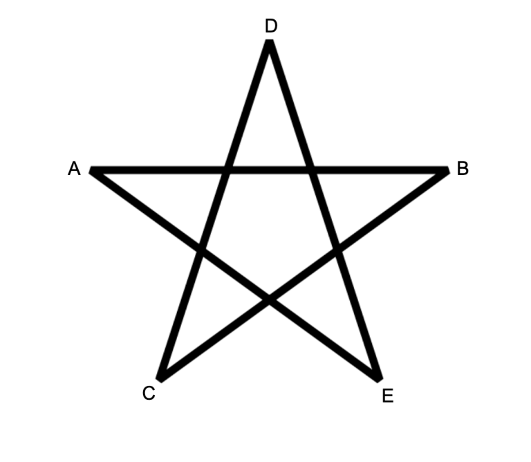
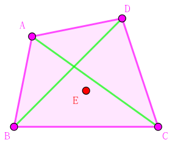

给定二维平面上的 $n$ 个点，保证没有三点共线。
定义一个五角星为一个无序五元组 $\left( A, B, C, D, E \right)$ 满足下面的拓扑性质：
"满足拓扑性质" 即线段的长度无关紧要，只要对应线段的交点的确存在。
问给定的 $n$ 个点可以构成多少个不同的五角星。
第一行包含一个正整数 $n$ ($5 \leq n \leq 300$)，表示点的个数。
接下来 $n$ 行，每行两个整数 $x_i, y_i$ ($-10^6 \leq x_i, y_i \leq 10^6$)，表示第 $i$ 个点的坐标。保证没有三点共线。
输出一行一个整数，表示五角星的数量。
容易注意到，$\left( A, B, C, D, E \right)$ 可以构成五角星的充要条件是，这 $5$ 个点均在它们的凸包上。
这个不是非常好数，因此我们可以考虑减法原理 (补集转化)，去计算凸包大小 (即凸包点数) 为 $3$ 和 $4$ 的无序五元组个数，然后再用总数 $\dbinom n5$ 去减即得。
首先，容易在 $O \left( n^3 \right)$ 的时间内算出每条直线的一侧有哪些点，然后使用 std::bitset 存储。
于是，凸包大小为 $3$ 的五元组个数就非常好求了：
枚举凸包上的三个点 ($O \left( n^3 \right)$)，计算三条边对应的 bitset 的交的大小 $t$ ($O \left( \dfrac n \omega \right)$)，然后对答案的贡献就是 $\dbinom t2$。
于是可以在 $O \left( \dfrac {n^4} {6 \omega} \right)$ 的时间内求出凸包大小为 $3$ 的五元组个数，记作 $C_3$。
接下来考虑计算凸包大小为 $4$ 的五元组个数。
如图，由于没有三点共线，于是另外一个点一定在四块区域中的某一块，不妨设位置如下图所示 (反正都是对称的，无所谓的)：
则考虑其中任意三点构成的三角形，可以发现，恰好有两个三角形包含了其中另一个点：$\Delta ABC$ 包含点 $E$，$\Delta BCD$ 包含点 $E$。
而对于凸包大小为 $5$ 的五元组，不存在一个三角形，包含其中另外一个点。
而对于凸包大小为 $3$ 的五元组，类似也可以说明，这样的包含关系恒有 $4$ 组。
于是我们只需要数包含关系的总数，就可以计算出凸包大小为 $4$ 的五元组个数了。
具体地，设满足 $D \in \Delta ABC$ 的无序四元组的个数为 $w$，则先要找另一个点与之形成无序五元组，共 $\left( n - 4 \right) \cdot w$ 种方案，然后除以 $2$ (因为每个凸包大小为 $4$ 的五元组会有这样两对包含关系)。
然而，对于这种情况会将凸包大小为 $3$ 的情况算重 $2$ 次，故 $$ C_4 = \dfrac {\left( n - 4 \right) \cdot w} 2 - 2 C_3 $$
最后，凸包大小为 $5$ 的五元组个数 $C_5 = \dbinom n5 - C_3 - C_4$。
总时间复杂度不变，还是 $O \left( \dfrac {n^4} {6 \omega} \right)$。
#include <bits/stdc++.h>
#define cross(x, y, z) (((y) - (x)) ^ ((z) - (x)))
typedef long long ll;
const int N = 354;
typedef std::bitset <N> bitset;
struct vec2 {
int x, y;
vec2 (int _x = 0, int _y = 0) : x(_x), y(_y) {}
vec2 * read() {return scanf("%d%d", &x, &y), this;}
inline vec2 operator - (const vec2 &B) const {return vec2(x - B.x, y - B.y);}
inline ll operator ^ (const vec2 &B) const {return (ll)x * B.y - (ll)y * B.x;}
} p[N];
int n;
ll C3, C4, C5, ALL;
bitset e[N][N];
int main() {
int i, j, k, t;
scanf("%d", &n), ALL = n * (n - 1ll) / 2 * (n - 2ll) / 3 * (n - 3ll) / 4 * (n - 4ll) / 5;
for (i = 0; i < n; ++i) p[i].read();
for (i = 0; i < n; ++i)
for (j = i + 1; j < n; ++j)
for (k = j + 1; k < n; ++k)
cross(p[i], p[j], p[k]) >= 0
? (e[j][k].set(i), e[k][i].set(j), e[i][j].set(k))
: (e[k][j].set(i), e[i][k].set(j), e[j][i].set(k));
for (i = 0; i < n; ++i)
for (j = i + 1; j < n; ++j)
for (k = j + 1; k < n; ++k)
t = (e[i][j].test(k) ? e[i][j] & e[j][k] & e[k][i] : e[i][k] & e[k][j] & e[j][i]).count(),
C3 += t * (t - 1ll) / 2, C4 += t;
C4 = C4 * (n - 4) / 2 - C3 * 2, C5 = ALL - C3 - C4;
printf("%lld\n", C5);
// fprintf(stderr, "C3 = %lld, C4 = %lld, C5 = %lld\n", C3, C4, C5);
return 0;
}
坑1：枚举三点时尽量不要重复 (判一次叉积即可)，以减少常数。